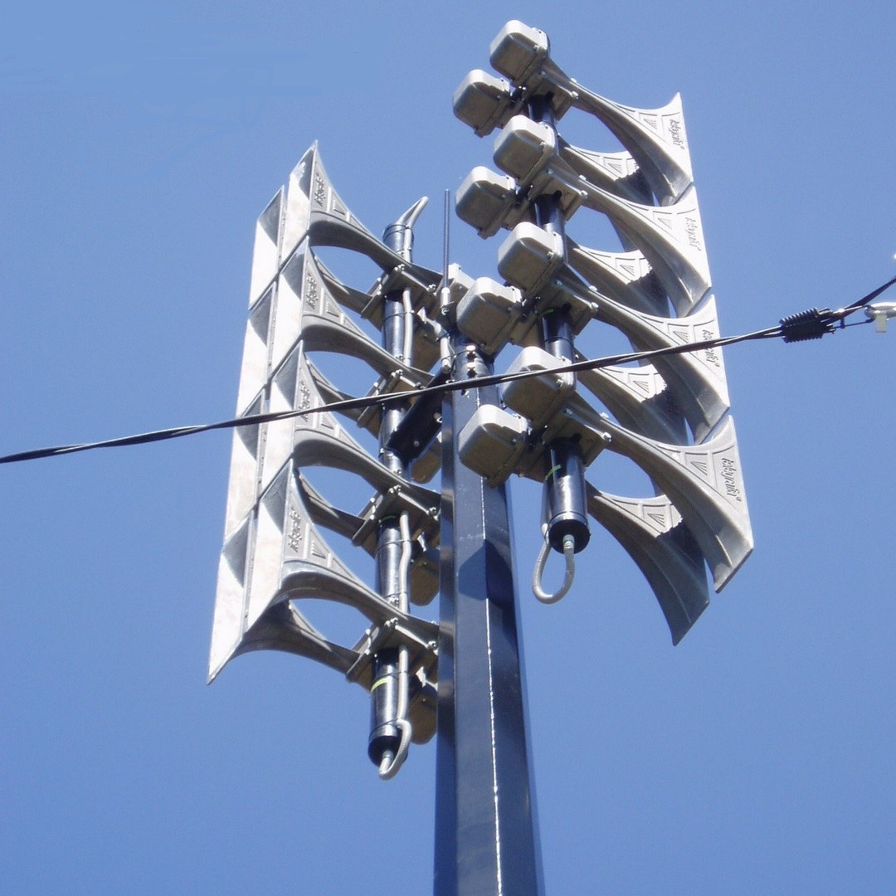

Азаматтық қорғаныс Civil Defense Гражданская оборона и защита
«Барлығының назарына!» дабылы, оповещение сигналдары мен дабыл бойынша әрекеттер. The "Attention everyone!" alert, warning signals and the actions to take on them. Сигнал «Внимание всем!», сигналы оповещения и действия по тревоге.

Азаматтық қорғаныс хабарлауы — халыққа қатер мен төтенше жағдайлар (ТЖ) туралы дабылдар мен ақпаратты дер кезінде жеткізу жүйесі. Мақсаты — адамдарды қауіп туралы ескертіп, қорғану шараларын қабылдауға және эвакуацияға уақыт беру. Хабарлама дабылдандырудың бірыңғай жүйесі (сирена, радио, телеарна, ұялы байланыс хабарламалары мен көшедегі дауыс зорайтқыштар) арқылы беріледі. Civil-defense warning is a system that delivers alert signals and information about threats and emergencies to the population in good time. Its goal is to warn people of danger and give them enough time to take protective measures or evacuate. Messages are passed through the unified alerting system: sirens, radio, TV, mobile push alerts and street loudspeakers. Оповещение ГО — это система своевременного доведения до населения сигналов и информации об угрозах и чрезвычайных ситуациях (ЧС). Цель — предупредить людей об опасности и дать время принять меры защиты или эвакуироваться. Сообщения передаются через единую систему оповещения: сирены, радио, телевидение, push-уведомления и уличные громкоговорители.
Жедел қызметтер: 101 · 103 · 112Emergency: 101 · 103 · 112Службы: 101 · 103 · 112
«Барлығының назарына!» — басқа барлық дабылдардың алдында берілетін бірыңғай ескерту белгісі. Ол үздіксіз дыбыс емес, үзік-үзік сирена дыбысы мен өндіріс гудоктары түрінде беріледі. Бұл дыбыс — нақты іс-әрекеттің бұйрығы емес, ал ақпаратты тыңдауға шақыру. "Attention everyone!" is the single warning signal that precedes every other alert. It is not a steady tone but an intermittent siren wail and factory hoots. The sound itself is not an order to act — it is a call to switch on an information source and listen. «Внимание всем!» — единый предупредительный сигнал, который предшествует всем остальным сигналам. Это не ровный звук, а прерывистое завывание сирен и гудки предприятий. Сам звук — не команда к действию, а призыв включить источник информации и слушать.
Сирена ≈ 3 минутSiren ≈ 3 minСирена ≈ 3 мин Радио / ТДRadio / TVРадио / ТВ Дауыс зорайтқышLoudspeakerГромкоговоритель SMS / pushSMS / pushSMS / push
| ДабылSignalСигнал | Нені білдіредіWhat it meansЧто означает | ӘрекетActionДействие |
|---|---|---|
| «Әуе дабылы»"Air raid"«Воздушная тревога» | әуеден шабуыл қаупіthreat of an air attackугроза нападения с воздуха | газ бен электрді сөндіріп, ең жақын паналау орнына барып жасырынуswitch off gas and power, take cover in the nearest shelterотключить газ и свет, укрыться в ближайшем защитном сооружении |
| «Әуе дабылынан — аяқталды»"All clear"«Отбой воздушной тревоги» | қауіп жойылдыthe threat is overугроза миновала | паналаудан сақтықпен шығып, әдеттегі іске оралу, нұсқауды күтуleave the shelter carefully, return to normal activity, await further instructionsосторожно выйти из укрытия, вернуться к делам, ждать указаний |
| «Радиациялық қауіп»"Radiation hazard"«Радиационная опасность» | радиоактивті ластану қаупіrisk of radioactive contaminationугроза радиоактивного заражения | ЖҚҚ кию, тұйықталған үй-жайда паналау, тамақ пен суды герметизациялау, нұсқау бойынша йод профилактикасыput on PPE, take cover in a sealed room, seal food and water, iodine prophylaxis when instructedнадеть СИЗ, укрыться в герметичном помещении, загерметизировать продукты и воду, йодная профилактика по указанию |
| «Химиялық дабыл»"Chemical alarm"«Химическая тревога» | улы заттардың таралу қаупіrelease of toxic agentsугроза заражения отравляющими веществами | противогаз бен қорғаныш костюмін (ОЗК) кию, аймақтан желге қарсы шығу немесе паналауput on a gas mask and protective suit (OZK), leave the zone upwind or take coverнадеть противогаз и ОЗК, выйти из зоны навстречу ветру или укрыться |
Ең жақын баспанаNearest shelterБлижайшее убежище
орны мен оған дейінгі жолits location and the way to itрасположение и путь к нему
Эвакуация жолыEvacuation routeМаршрут эвакуации
жиналу орны мен отбасы кездесетін нүктеassembly point and family meeting placeместо сбора и точка встречи семьи
Жедел қызметтерEmergency numbersЭкстренные службы
101 — өрт · 103 — жедел жәрдем · 112 — бірыңғай101 — fire · 103 — ambulance · 112 — single line101 — пожарная · 103 — скорая · 112 — единый